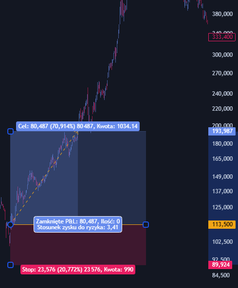
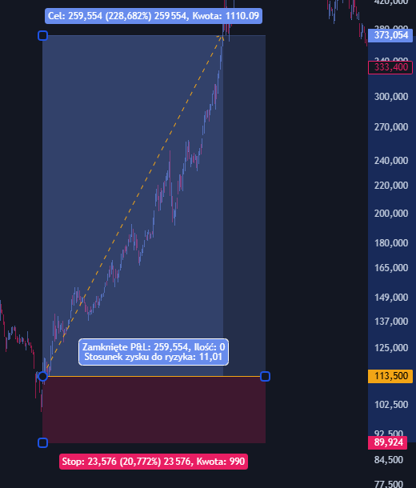
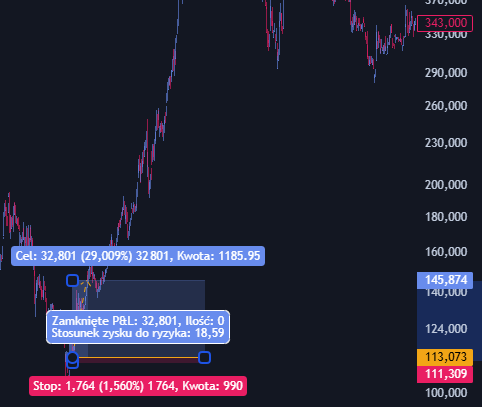
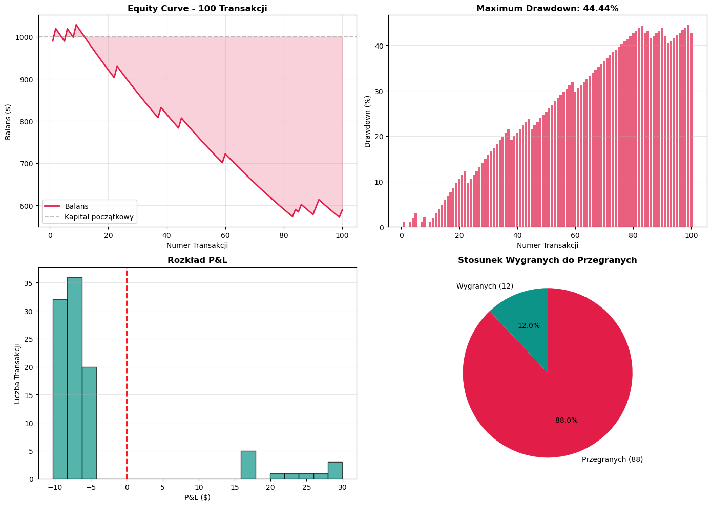
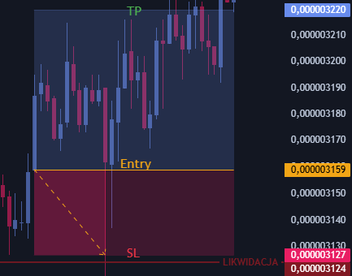
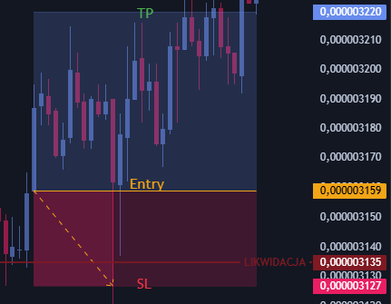
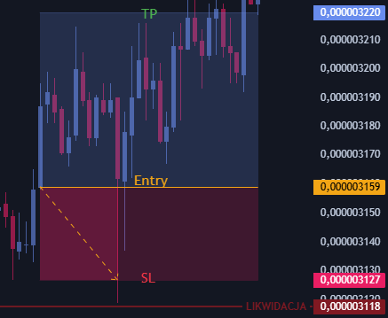
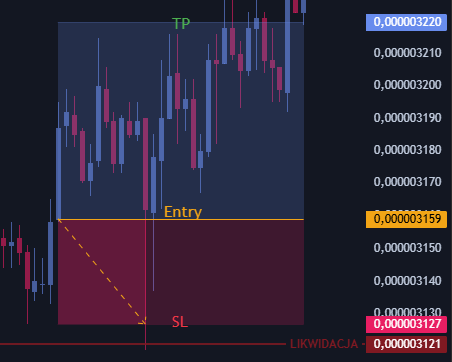

Risk Management
Risk Management
Zarządzanie ryzykiem to uporządkowane podejście do ochrony kapitału przed sytuacjami, w których rynek idzie w przeciwną stronę, niż przewidujemy.
W tradingu zakłada się, że straty są nieuniknione; to koszt prowadzenia „działalności”, tak jak wydatki operacyjne w zwykłej firmie. Kluczowa różnica między tymi, którzy zarabiają, a tymi, którzy tracą, polega na tym, żeby te straty były mniejsze niż zyski. Innymi słowy: tracisz często, ale zarabiasz więcej, niż tracisz (asymetria wyników).
Podstawy zarządzania ryzykiem są dość proste: dobrze dobrać wielkość pozycji, ustawiać zlecenia obronne [Stop Loss] i rozsądnie korzystać z dźwigni finansowej.
Dzięki temu jesteś w stanie przetrwać nawet serię nieudanych transakcji. Bez takiego podejścia nawet dobra strategia wejścia może skończyć się wyzerowaniem konta, np. przez jedno nagłe, nieprzewidywalne zdarzenie (np. „czarny łabędź”).
Matematyczne aspekty asymetrii strat i odzyskiwania kapitału
Zarządzanie ryzykiem musi uwzględniać matematyczną naturę strat, która jest nieliniowa i faworyzuje ochronę kapitału ponad agresywne dążenie do zysków. Zjawisko to, znane jako asymetria strat, polega na tym, że procentowy zysk potrzebny do odrobienia straty rośnie szybciej niż sama strata.
Tabela regresji kapitałowej i wymaganej regeneracji
| Procentowa strata kapitału | Wymagany zysk do powrotu do break-even | Implikacje dla strategii |
|---|---|---|
| 5% | 5,26% | Ryzyko operacyjne pod kontrolą. |
| 10% | 11,11% | Standardowa fluktuacja portfela. |
| 20% | 25,00% | Konieczność weryfikacji założeń ryzyka. |
| 33% | 50,00% | Poważne naruszenie struktury portfela. |
| 50% | 100,00% | Ekstremalna trudność w odzyskaniu bazy. |
| 90% | 900,00% | Statystyczne bankructwo. |
Ryzyko systematyczne i niesystematyczne
Skuteczne zarządzanie portfelem wymaga rozróżnienia między dwoma fundamentalnymi rodzajami ryzyka, które mają odmienne przyczyny i wymagają różnych metod mitygacji.
Ryzyko systematyczne (rynkowe)
Ryzyko systematyczne dotyczy całego rynku lub danej klasy aktywów i wynika z czynników makroekonomicznych, geopolitycznych oraz systemowych. Jest ono nieuniknione i nie może zostać wyeliminowane poprzez prostą dywersyfikację w ramach jednej klasy aktywów.
Przykłady czynników generujących ryzyko systematyczne:
- Zmiany stóp procentowych przez banki centralne.
- Inflacja i zmiany siły nabywczej pieniądza.
- Globalne recesje i kryzysy gospodarcze.
- Wojny, terroryzm i niestabilność polityczna.
Ryzyko niesystematyczne (specyficzne)
Ryzyko niesystematyczne, zwane również specyficznym lub dywersyfikowalnym, jest unikalne dla konkretnej spółki, branży lub sektora. Wynika ono z wewnętrznych procesów operacyjnych, decyzji zarządu czy zdarzeń losowych dotyczących bezpośrednio danego podmiotu.
Główne kategorie ryzyka niesystematycznego:
- Ryzyko biznesowe: niepowodzenia nowych produktów, utrata kluczowych klientów.
- Ryzyko finansowe: problemy z płynnością, nadmierne zadłużenie spółki.
- Ryzyko operacyjne: awarie systemów, błędy produkcyjne, strajki.
- Ryzyko regulacyjne: zmiany przepisów uderzające w konkretną branżę.
Psychologia ryzyka
Zarządzanie ryzykiem to w dużej mierze zarządzanie własnymi emocjami i błędami poznawczymi. Nawet najbardziej zaawansowane systemy matematyczne zawodzą, gdy ludzie ulegają presji psychologicznej.
Teoria perspektywy i awersja do strat
Badania Kahnemana i Tversky'ego wykazały, że ludzie nie są racjonalni w ocenie ryzyka. Awersja do strat sprawia, że ból z utraty 1000 PLN jest silniejszy niż satysfakcja z zyskania 1000 PLN. Prowadzi to do irracjonalnych zachowań rynkowych, takich jak:
- Efekt dyspozycji: Sprzedawanie zyskownych pozycji zbyt wcześnie i przetrzymywanie stratnych w nieskończoność w nadziei na powrót ceny.
- Sunk Cost Fallacy: Kontynuowanie nieudanej inwestycji tylko dlatego, że zainwestowano już w nią dużo czasu lub pieniędzy.
- Revenge Trading: Próba odzyskania strat poprzez natychmiastowe otwieranie nowych, większych pozycji pod wpływem złości i frustracji.
Zwalczanie tych błędów wymaga wdrożenia sztywnych procedur, takich jak automatyczne zlecenia Stop Loss / Take Profit, które usuwają konieczność podejmowania decyzji w chwilach stresu.
Najczęstsze błędy w zarządzaniu ryzykiem i metody ich eliminacji
Większość porażek na rynkach finansowych nie wynika z błędnych prognoz cenowych, lecz z fundamentalnych błędów w zarządzaniu kapitałem.
| Błąd | Mechanizm destrukcji | Rozwiązanie systemowe |
|---|---|---|
| Overleveraging | Zbyt duża dźwignia finansowa powoduje, że mały ruch ceny czyści depozyt. | Ograniczenie ryzyka do 1-2% na transakcję. |
| Brak Stop Loss | Pojedyncza stratna transakcja może doprowadzić do bankructwa. | Nigdy nie otwieraj pozycji bez zdefiniowanego zlecenia obronnego. |
| Modyfikacja SL | Przesuwanie Stop Loss w celu uniknięcia straty tylko ją powiększa. | Ustalenie poziomu SL przed wejściem i zakaz jego przesuwania na niekorzyść. |
| Brak planu | Decyzje podejmowane pod wpływem emocji lub szumu informacyjnego. | Pisemna strategia z jasnymi regułami wejścia, wyjścia i ryzyka. |
| Ignorowanie kosztów | Prowizje i spready zjadają zysk, szczególnie przy nadmiernym handlu. | Analiza kosztów transakcyjnych i optymalizacja częstotliwości handlu. |
Święta Trójca Risk Management
-
Planowanie pozycji: Nie przewidujesz przyszłości, tylko rozgrywasz scenariusz.
-
STOP LOSSSL: Pierwsza linia obrony przed "wybiciem". Musi być ustawiony tak, by chronić kapitał, ale też uwzględniać szum rynkowy. Punkt, w którym scenariusz staje się nieaktualny. -
Risk/Reward RatioRRR: Minimalny stosunek zysku do ryzyka to 3:1. Poniżej tej wartości statystyka długoterminowa staje się niekorzystna jeżeli nie wliczamy fee do 1%.
Ryzyko 1%
Całkowity koszt porażki
Zamiast akceptować 1% straty + fee (co daje nawet 1,5%),
całkowity koszt zamknięcia na SL (strata z ceny + prowizje giełdowe) powinien wynosić równo 1% kapitału.
Matematyczna nieśmiertelność
Trzymanie się sztywnego 1% sprawia, że nawet długa seria strat nie wyzeruje konta.
[RRR] jako mnożnik
Zarobkiem jest wielokrotność ryzyka (R), a nie ruch procentowy. Zagranie 10R to 10% zysku konta przy ryzyku 1%.
| 3,4R | 11R | 18,5R |
|---|---|---|
 |
 |
 |
Symulacja kiedy ~90% pozycji jest przegranych
| Kapitał początkowy | Ryzyko na transakcję | Win Rate | Risk/Reward Ratio | Liczba transakcji |
|---|---|---|---|---|
| $1,000 | 1.0% | 10.0% | 1:3.0 | 100 |
| Trade # | Balance Before | Risk Amount | Profit Amount | Win | PnL | Balance After | Peak Balance | Drawdown (%) |
|---|---|---|---|---|---|---|---|---|
| 1 | 1000.00 | 10.00 | 30.00 | Lose | -10.00 | 990.00 | 1000.00 | 1.00% |
| 2 | 990.00 | 9.90 | 29.70 | Win | 29.70 | 1019.70 | 1019.70 | 0.00% |
| 3 | 1019.70 | 10.20 | 30.59 | Lose | -10.20 | 1009.50 | 1019.70 | 1.00% |
| 4 | 1009.50 | 10.10 | 30.29 | Lose | -10.10 | 999.41 | 1019.70 | 1.99% |
| 5 | 999.41 | 9.99 | 29.98 | Lose | -9.99 | 989.41 | 1019.70 | 2.97% |
| ... | ... | ... | ... | ... | ... | ... | ... | ... |
| 96 | 595.07 | 5.95 | 17.85 | Lose | -5.95 | 589.12 | 1028.78 | 42.74% |
| 97 | 589.12 | 5.89 | 17.67 | Lose | -5.89 | 583.23 | 1028.78 | 43.31% |
| 98 | 583.23 | 5.83 | 17.50 | Lose | -5.83 | 577.39 | 1028.78 | 43.88% |
| 99 | 577.39 | 5.77 | 17.32 | Lose | -5.77 | 571.62 | 1028.78 | 44.44% |
| 100 | 571.62 | 5.72 | 17.15 | Win | 17.15 | 588.77 | 1028.78 | 42.77% |
Podsumowanie Wyników
Wynik Finansowy
| Parametr | Wartość |
|---|---|
| Kapitał początkowy | $1,000.00 |
| Kapitał końcowy | $588.77 |
| Zysk/Strata (USD) | $-411.23 |
| Zysk/Strata (%) | -41.12% |
Metryki Ryzyka
| Parametr | Wartość |
|---|---|
| Maximum Drawdown | 44.44% |
| Win Rate | 12.0% |
| Expected Value (EV) | -60.00% |
Analiza Transakcji
| Parametr | Wartość |
|---|---|
| Profit Factor | 0.40 |
| Średni zysk | $22.69 |
| Średnia strata | $-7.77 |
Ekstrema
| Parametr | Wartość |
|---|---|
| Najlepsza transakcja | $29.96 |
| Najgorsza transakcja | $-10.29 |

Dźwignia i Bezpieczeństwo Likwidacji
Dźwignia to narzędzie
Pozwala używać mniejszej ilości kapitału własnego i nie zwiększa ryzyka ponad zaplanowany 1%.
- Zalecane: wliczaj prowizję w 1%.
- Opcjonalne: 1% czystego kapitału i zwiększony bufor dla likwidacji (mniejsza dźwignia).
Poziom likwidacji musi zawsze znajdować się poza strefą Stop Loss'a.
| Kiedy SL zostanie zrealizowany utrata 1% kapitału. |
Likwidacja. Konto wyzerowane. |
|---|---|
 |
 |
Bufor bezpieczeństwa
Wybieraj taką dźwignię, aby między SL a likwidacją był margines błędu na wypadek gwałtownych skoków zmienności.
Jeśli Twoje 1% ryzyka jest wyliczone "na styk", poślizg może sprawić, że likwidacja się zrealizuje.
| Zastosowany większy margines błędu. SL wybity, utrata 1% kapitału. |
SL nie został zrealizowany, poziom likwidacji został wybity. Konto wyzerowane. |
|---|---|
 |
 |
Dodatkowo:
-
Take ProfitTP musi być wyznaczony. Może być ich kilka: TP1, TP2, TP3 -
Prowadząc pozycję staramy się przesunąć SL w
Break EvenBE (+fee). W razie wybicia pozwoli to wyjść na "zero". -
Z czasem SL przesuwany w profit.